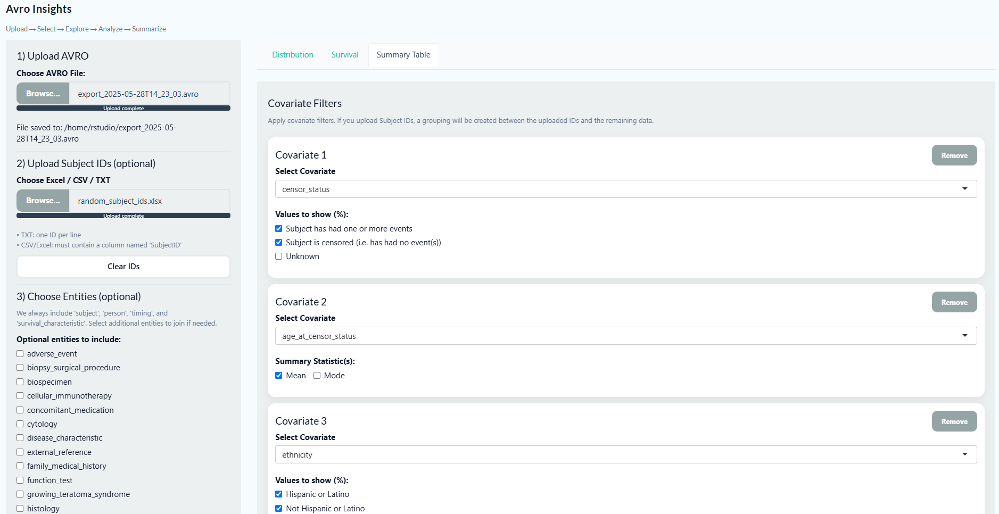

Project Information
Overview
Dockerized R/Shiny Application for PFB AVRO Biomedical Data Analysis
This project provides a Dockerized RStudio-based Shiny application for analyzing biomedical datasets stored in
AVRO files using the Portable Format for Biomedical (PFB) standard. The system leverages Apache Spark (via
sparklyr) to efficiently read and process large-scale AVRO inputs, handling files with 40,000+ nested records,
and flattens complex hierarchical structures into structured tabular formats for downstream analysis.
Users can explore different entity types and observation nodes, generate percentage distributions, and perform
survival analyses such as Kaplan–Meier overall and event-free survival curves. A configurable
Table-1 feature allows selection of covariates, specification of variable types, and
inclusion/exclusion of variables, while also supporting statistical p-value computation when grouping is
applied.
Grouping can be performed by uploading subject ID files (CSV, Excel, or text). Two groups are then created:
one matching the IDs and the other comprising the remaining subjects. If no grouping file is provided, Table-1
is generated for the full dataset. The application further allows iterative re-grouping, clearing of results,
and re-analysis with new inputs. Outputs including summary tables (Excel) and visualizations (PNG) can be
downloaded directly for reporting.
Encapsulation within Docker ensures reproducibility, consistency, and portability across environments, while
integration with Apache Spark enables scalable processing of large biomedical datasets. Additionally, the
application can be deployed on AWS (EC2, ECS, or Fargate) to provide secure, scalable, and remote access for
research teams.
Workflow
From the UI, users upload the AVRO file in the PFB (Portable Format for Biomedical data). If the file is
valid, all entities are displayed. Core entities such as person, subject, timing,
survival_characteristics are automatically included for survival analyses. Optionally, users can
include custom entities. Data is merged with relationships preserved, enabling downstream operations.
Percentage Distribution
Users can select categorical variables to compute percentage distributions, gaining quick insights. Results
are exportable as Excel or PNG files.
Survival Curves
Overall Survival
Calculated using initial diagnosis dates and last-known survival status from
survival_characteristics. The Kaplan–Meier estimator is used to plot survival rates.
Event-Free Survival
Event-free survival is computed using censoring information from subject + timing. If a patient
is censored, the curve reflects the drop accordingly.
Table-1 Analysis
Users can select covariates, specify variable types, and generate summary tables. Numeric variables include
mean, median, and missing percentages, while categorical variables show counts and percentages. Results are
interactive: rows per page can be adjusted, and search functionality is supported.

Grouping is enabled by uploading subject IDs. IDs in the file form Group 1, while remaining
subjects form Group 2. P-values are computed for statistical comparisons. Users can clear
results, re-upload new IDs, and repeat analyses. Final outputs can be downloaded as Excel files.